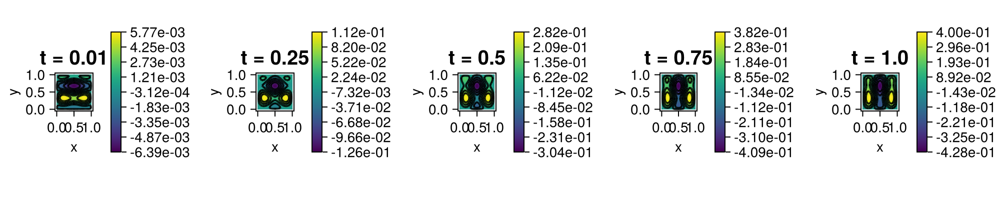

205 : Space-Time FEM for Poisson Problem
This example computes the solution $u$ of the two-dimensional heat equation
\[\begin{aligned} u_t - \Delta u & = f \quad \text{in } \Omega \end{aligned}\]
with a (possibly space- and time-depepdent) right-hand side $f$ and homogeneous Dirichlet boundary and initial conditions on the unit square domain $\Omega$ on a given grid with space-time finite element methods based on tensorized ansatz functions.

module Example205_LowLevelSpaceTimePoisson
using ExtendableFEMBase
using ExtendableGrids
using ExtendableSparse
using GridVisualize
using UnicodePlots
using Test #
# data for Poisson problem
const μ = (t) -> 1e-1*t + 1*max(0,(1-2*t))
const f = (x, t) -> sin(3*pi*x[1])*4*t - cos(3*pi*x[2])*4*(1-t)
function main(; dt = 0.01, Tfinal = 1, level = 5, order = 1, Plotter = nothing, produce_movie = false )
# Finite element type
FEType_time = H1Pk{1, 1, order}
FEType_space = H1Pk{1, 2, order}
# time grid
T = LinRange(0, Tfinal, round(Int, Tfinal/dt + 1))
grid_time = simplexgrid(T)
# space grid
X = LinRange(0, 1, 2^level + 1)
grid_space = simplexgrid(X, X)
# FESpaces for time and space
FES_time = FESpace{FEType_time}(grid_time)
FES_space = FESpace{FEType_space}(grid_space)
# solve
sol = solve_poisson_lowlevel(FES_time, FES_space, μ, f)
# visualize
if produce_movie
@info "Producing movie..."
vis=GridVisualizer(Plotter=Plotter)
movie(vis, file="example205_video.mp4") do vis
for tj = 2 : length(T)
t = T[tj]
first = (tj-1)*FES_space.ndofs+1
last = tj*FES_space.ndofs
scalarplot!(vis, grid_space, view(sol,first:last), title = "t = $(Float16(t))")
reveal(vis)
end
end
return sol, vis
else
@info "Plotting at five times..."
plot_timesteps = [2,round(Int,length(T)/4+0.25),round(Int,length(T)/2+0.5),round(Int,length(T)-length(T)/4),FES_time.ndofs]
plt = GridVisualizer(; Plotter = Plotter, layout = (1, length(plot_timesteps)), clear = true, resolution = (200*length(plot_timesteps), 200))
for tj = 1 : length(plot_timesteps)
t = plot_timesteps[tj]
first = (t-1)*FES_space.ndofs+1
last = t*FES_space.ndofs
scalarplot!(plt[1,tj], grid_space, view(sol,first:last), title = "t = $(T[t])")
end
return sol, plt
end
end
function solve_poisson_lowlevel(FES_time, FES_space, μ, f)
ndofs_time = FES_time.ndofs
ndofs_space = FES_space.ndofs
ndofs_total = ndofs_time * ndofs_space
sol = zeros(Float64, ndofs_total)
A = ExtendableSparseMatrix{Float64, Int64}(ndofs_total, ndofs_total)
b = zeros(Float64, ndofs_total)
println("Assembling...")
time_assembly = @elapsed @time begin
loop_allocations = assemble!(A, b, FES_time, FES_space, f, μ)
# fix homogeneous boundary dofs
bdofs = boundarydofs(FES_space)
for sdof in bdofs
for dof_t = 1 : ndofs_time
dof = (dof_t-1)*ndofs_space + sdof
A[dof, dof] = 1e60
b[dof] = 0
end
end
# fix initial value by zero
for j=1:ndofs_space
A[j,j] = 1e60
b[j] = 0
end
ExtendableSparse.flush!(A)
end
@info ".... spy plot of system matrix:\n$(UnicodePlots.spy(sparse(A.cscmatrix)))"
# solve
println("Solving linear system...")
time_solve = @elapsed @time copyto!(sol, A \ b)
# compute linear residual
@show norm(A*sol - b)
return sol
end
function assemble!(A::ExtendableSparseMatrix, b::Vector, FES_time, FES_space, f, μ = 1)
# get space and time grids
grid_time = FES_time.xgrid
grid_space = FES_space.xgrid
# get number of degrees of freedom
ndofs_time = FES_time.ndofs
ndofs_space = FES_space.ndofs
# get local to global maps
EG_time = grid_time[UniqueCellGeometries][1]
EG_space = grid_space[UniqueCellGeometries][1]
L2G_time = L2GTransformer(EG_time, grid_time, ON_CELLS)
L2G_space = L2GTransformer(EG_space, grid_space, ON_CELLS)
# get finite element types
FEType_time = eltype(FES_time)
FEType_space = eltype(FES_space)
# quadrature formula in space
qf_space = QuadratureRule{Float64, EG_space}(2 * (get_polynomialorder(FEType_space, EG_space) - 1))
weights_space::Vector{Float64} = qf_space.w
xref_space::Vector{Vector{Float64}} = qf_space.xref
nweights_space::Int = length(weights_space)
cellvolumes_space = grid_space[CellVolumes]
# quadrature formula in time
qf_time = QuadratureRule{Float64, EG_time}(2 * (get_polynomialorder(FEType_time, EG_time) - 1))
weights_time::Vector{Float64} = qf_time.w
xref_time::Vector{Vector{Float64}} = qf_time.xref
nweights_time::Int = length(weights_time)
cellvolumes_time = grid_time[CellVolumes]
# FE basis evaluators and dofmap for space elements
FEBasis_space_∇ = FEEvaluator(FES_space, Gradient, qf_space)
∇vals_space = FEBasis_space_∇.cvals
FEBasis_space_id = FEEvaluator(FES_space, Identity, qf_space)
idvals_space = FEBasis_space_id.cvals
celldofs_space = FES_space[ExtendableFEMBase.CellDofs]
# FE basis evaluators and dofmap for time elements
FEBasis_time_∇ = FEEvaluator(FES_time, Gradient, qf_time)
∇vals_time = FEBasis_time_∇.cvals
FEBasis_time_id = FEEvaluator(FES_time, Identity, qf_time)
idvals_time = FEBasis_time_id.cvals
celldofs_time = FES_time[ExtendableFEMBase.CellDofs]
# ASSEMBLY LOOP
loop_allocations = 0
function barrier(EG_time, EG_space, L2G_time::L2GTransformer, L2G_space::L2GTransformer)
# barrier function to avoid allocations by type dispatch
ndofs4cell_time::Int = get_ndofs(ON_CELLS, FEType_time, EG_time)
ndofs4cell_space::Int = get_ndofs(ON_CELLS, FEType_space, EG_space)
Aloc = zeros(Float64, ndofs4cell_space, ndofs4cell_space)
Mloc = zeros(Float64, ndofs4cell_time, ndofs4cell_time)
ncells_space::Int = num_cells(grid_space)
ncells_time::Int = num_cells(grid_time)
x::Vector{Float64} = zeros(Float64, 2)
t::Vector{Float64} = zeros(Float64, 1)
# assemble Laplacian
loop_allocations += @allocated for cell ∈ 1:ncells_space
# update FE basis evaluators for space
FEBasis_space_∇.citem[] = cell
update_basis!(FEBasis_space_∇)
# assemble local stiffness matrix in space
for j ∈ 1:ndofs4cell_space, k ∈ 1:ndofs4cell_space
temp = 0
for qp ∈ 1:nweights_space
temp += weights_space[qp] * dot(view(∇vals_space, :, j, qp), view(∇vals_space, :, k, qp))
end
Aloc[j, k] = temp
end
Aloc .*= cellvolumes_space[cell]
# add local matrix to global matrix
for time_cell ∈ 1:ncells_time
update_trafo!(L2G_time, time_cell)
for jT ∈ 1:ndofs4cell_time, kT ∈ 1:ndofs4cell_time
dofTj = celldofs_time[jT, time_cell]
dofTk = celldofs_time[kT, time_cell]
for qpT ∈ 1:nweights_time
# evaluate time coordinate and μ
eval_trafo!(t, L2G_time, xref_time[qpT])
factor = μ(t[1]) * weights_time[qpT] * idvals_time[1,jT,qpT] * idvals_time[1,kT,qpT] * cellvolumes_time[time_cell]
for j ∈ 1:ndofs4cell_space
dof_j = celldofs_space[j, cell] + (dofTj - 1) * ndofs_space
for k ∈ 1:ndofs4cell_space
dof_k = celldofs_space[k, cell] + (dofTk - 1) * ndofs_space
if abs(Aloc[j, k]) > 1e-15
# write into sparse matrix, only lines with allocations
rawupdateindex!(A, +, Aloc[j, k]*factor, dof_j, dof_k)
end
end
end
end
end
end
fill!(Aloc, 0)
# assemble right-hand side
update_trafo!(L2G_space, cell)
for qp ∈ 1:nweights_space
# evaluate coordinates of quadrature point in space
eval_trafo!(x, L2G_space, xref_space[qp])
for time_cell ∈ 1:ncells_time
update_trafo!(L2G_time, time_cell)
for qpT ∈ 1:nweights_time
# evaluate time coordinate
eval_trafo!(t, L2G_time, xref_time[qpT])
# evaluate right-hand side in x and t
fval = f(x, t[1])
# multiply with test function and add to right-hand side
for j ∈ 1:ndofs4cell_space
temp = weights_time[qpT] * weights_space[qp] * idvals_space[1, j, qp] * fval * cellvolumes_space[cell] * cellvolumes_time[time_cell]
# write into global vector
for jT ∈ 1:ndofs4cell_time
dof_j = celldofs_space[j, cell] + (celldofs_time[jT, time_cell] - 1) * ndofs_space
b[dof_j] += temp * idvals_time[1, jT, qpT]
end
end
end
end
end
end
# assemble time derivative
loop_allocations += @allocated for time_cell ∈ 1:ncells_time
# update FE basis evaluators for time derivative
FEBasis_time_∇.citem[] = time_cell
update_basis!(FEBasis_time_∇)
# assemble local convection term in time
for j ∈ 1:ndofs4cell_time, k ∈ 1:ndofs4cell_time
temp = 0
for qpT ∈ 1:nweights_time
temp += weights_time[qpT] * dot(view(∇vals_time, :, j, qpT), view(∇vals_time, :, k, qpT))
end
Mloc[j, k] = temp
end
Mloc .*= cellvolumes_time[time_cell]
# add local matrix to global matrix
for cell ∈ 1:ncells_space
for jX ∈ 1:ndofs4cell_space, kX ∈ 1:ndofs4cell_space
dofXj = celldofs_space[jX, cell]
dofXk = celldofs_space[kX, cell]
for qpX ∈ 1:nweights_space
factor = weights_space[qpX] * idvals_space[1, jX, qpX] * idvals_space[1, kX, qpX] * cellvolumes_space[cell]
for j ∈ 1:ndofs4cell_time
dof_j = dofXj + (celldofs_time[j, time_cell] - 1) * ndofs_space
for k ∈ 1:ndofs4cell_time
dof_k = dofXk + (celldofs_time[k, time_cell] - 1) * ndofs_space
if abs(Mloc[j, k]) > 1e-15
# write into sparse matrix, only lines with allocations
rawupdateindex!(A, +, Mloc[j, k]*factor, dof_j, dof_k)
end
end
end
end
end
end
fill!(Mloc, 0)
end
end
barrier(EG_time, EG_space, L2G_time, L2G_space)
flush!(A)
return loop_allocations
end
function generateplots(dir = pwd(); Plotter = nothing, kwargs...)
~, plt = main(; Plotter = Plotter, kwargs...)
scene = GridVisualize.reveal(plt)
GridVisualize.save(joinpath(dir, "example205.png"), scene; Plotter = Plotter)
end
end #moduleThis page was generated using Literate.jl.